Maskimalt utbytte er det høyeste beløpet et aksjeselskap kan dele ut til aksjonærene uten å bryte lovens krav til egenkapital og soliditet. Dette er et sentralt begrep i norsk selskapsrett og regnskapspraksis som sikrer at selskaper opprettholder tilstrekkelig finansiell stabilitet.
For informasjon om hvordan utbytte beskattes og påvirker aksjonærene, se vår Aksjonærmodellen - Komplett Guide til Norsk Aksjebeskatning.
For mer informasjon om Ekstraordinært Utbytte, se egen artikkel om temaet.
For mer om oppjustering av utbytte etter vedtak, se Oppjustering av aksjeutbytte.
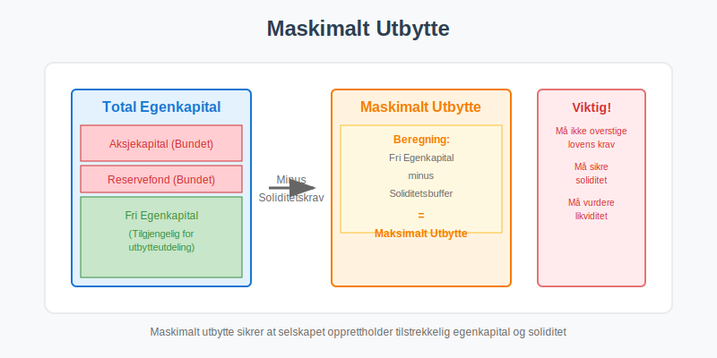
For en oversikt over ulike typer fond og deres regnskapsmessige behandling, se Hva er Fond? Ulike Typer Fond og Regnskapsbehandling.
Definisjon av Maskimalt Utbytte
Maskimalt utbytte defineres som det maksimale beløpet et aksjeselskap kan dele ut til sine aksjonærer uten å:
- Redusere aksjekapitalen under lovens minimumskrav
- Bryte soliditetskravene i aksjeloven
- Sette selskapets betalingsevne i fare
- Redusere den bundne egenkapitalen
Juridisk Grunnlag
Reglene for maskimalt utbytte er forankret i aksjeloven § 8-1 som fastsetter at utbytte kun kan deles ut av:
- Årets overskudd etter fradrag for tap fra tidligere år
- Annen egenkapital som ikke er bundet
- Fri egenkapital som overstiger kravene til soliditet
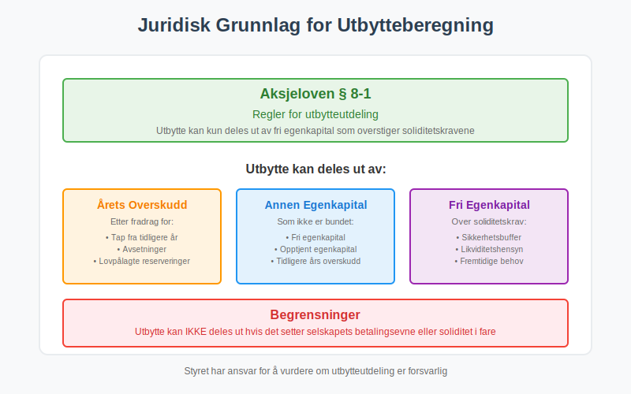
Beregning av Maskimalt Utbytte
Grunnleggende Formel
Den grunnleggende formelen for beregning av maskimalt utbytte er:
Maskimalt utbytte = Fri egenkapital - Soliditetskrav
Hvor:
- Fri egenkapital = Total egenkapital - Bundet egenkapital
- Soliditetskrav = Minimum egenkapital som må beholdes
Detaljert Beregningsmetode
| Komponent | Beskrivelse | Beløp |
|---|---|---|
| Total egenkapital | Sum av all egenkapital | XXX |
| Minus: Aksjekapital | Lovpålagt minimum | (XXX) |
| Minus: Overkursfond | Bundet egenkapital | (XXX) |
| Minus: Lovpålagt reservefond | 10% av aksjekapital | (XXX) |
| Minus: Annen bundet egenkapital | Vedtektsfestet eller lovpålagt | (XXX) |
| = Fri egenkapital | Tilgjengelig for utdeling | XXX |
| Minus: Soliditetsbuffer | Sikkerhetsmarginal | (XXX) |
| = Maskimalt utbytte | Maksimalt utdelingsbeløp | XXX |
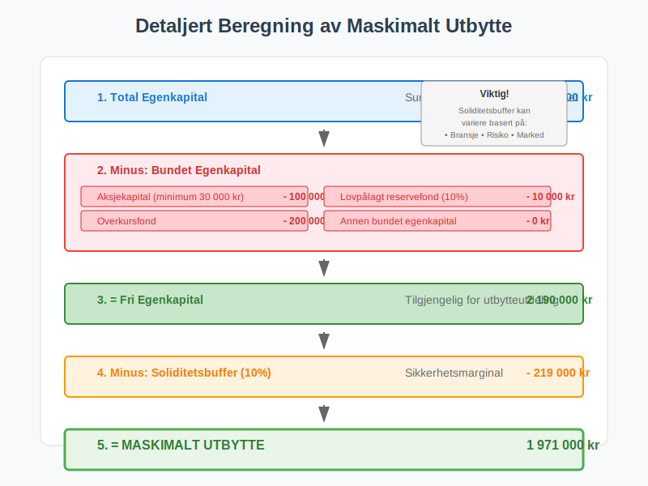
Faktorer som Påvirker Maskimalt Utbytte
Bundet Egenkapital
Bundet egenkapital kan ikke deles ut som utbytte og omfatter:
- Aksjekapital - lovpålagt minimum 30 000 kr for AS
- Overkursfond - innbetalt beløp utover pålydende
- Lovpålagt reservefond - minimum 10% av aksjekapitalen
- Vedtektsfestet reservefond - hvis fastsatt i vedtektene
- Oppskrivningsfond - fra oppskrivning av anleggsmidler
Soliditetskrav
Selskapet må opprettholde tilstrekkelig soliditet for å:
- Dekke fremtidige kostnader og forpliktelser
- Håndtere uforutsette tap
- Opprettholde likviditet
- Sikre fortsatt drift
Regnskapsmessige Hensyn
Ved beregning av maskimalt utbytte må følgende regnskapsmessige forhold vurderes:
- Årsresultat og dets påvirkning på egenkapitalen
- Balanseførte verdier vs. virkelige verdier
- Avsetninger for fremtidige forpliktelser
- Usikre poster i regnskapet
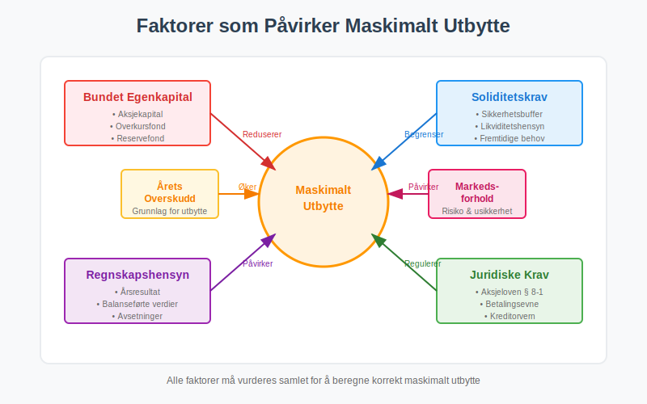
Praktisk Eksempel på Beregning
Eksempel: AS Nordlys
La oss se på et praktisk eksempel med AS Nordlys:
Balanseopplysninger (31.12.2023)
| Post | Beløp (NOK) |
|---|---|
| Total egenkapital | 2 500 000 |
| Aksjekapital | 100 000 |
| Overkursfond | 200 000 |
| Lovpålagt reservefond | 10 000 |
| Annen egenkapital | 2 190 000 |
Beregning av Maskimalt Utbytte
Fri egenkapital:
Total egenkapital: 2 500 000
- Aksjekapital: (100 000)
- Overkursfond: (200 000)
- Lovpålagt reservefond: (10 000)
= Fri egenkapital: 2 190 000
Soliditetsvurdering:
Fri egenkapital: 2 190 000
- Soliditetsbuffer (10%): (219 000)
= Maskimalt utbytte: 1 971 000
Konklusjon: AS Nordlys kan maksimalt dele ut 1 971 000 kr i utbytte.
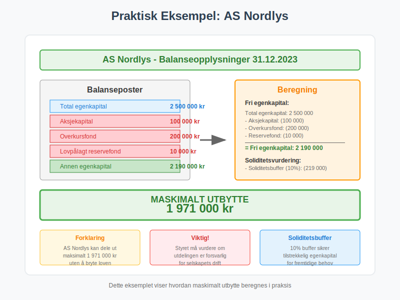
Særlige Regler og Unntak
Nyetablerte Selskaper
For nyetablerte selskaper gjelder spesielle regler:
- Ingen utbytte første driftsår uten særskilt vurdering
- Ekstra forsiktighet ved vurdering av soliditet
- Krav om oppbygging av arbeidskapital
Selskaper i Finansiell Krise
Selskaper med finansielle utfordringer har strengere begrensninger:
- Forbud mot utbytte ved negativ egenkapital
- Ekstra soliditetskrav ved lav egenkapitalandel
- Krav om rekapitalisering før utbytteutdeling
Konsernforhold
I konsernselskaper må følgende vurderes:
- Konsernbidrag vs. utbytte
- Konsolideringshensyn
- Minoritetsaksjonærers rettigheter
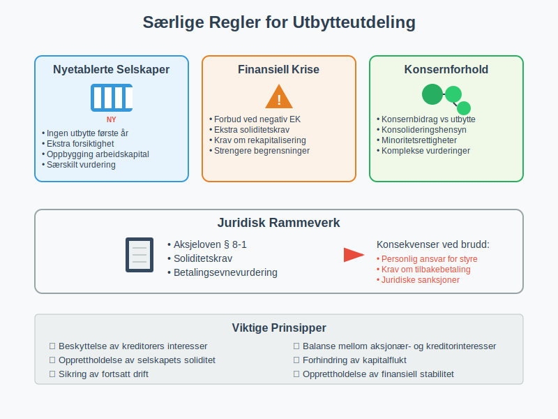
Prosess for Utbytteutdeling
Styrets Rolle
Styret har ansvar for:
- Vurdere selskapets økonomiske situasjon
- Beregne maskimalt utbytte
- Foreslå utbytteutdeling til generalforsamlingen
- Sikre at utdelingen ikke setter selskapet i fare
Generalforsamlingens Vedtak
Generalforsamlingen må:
- Vedta årsregnskapet
- Beslutte utbytteutdeling basert på styrets forslag
- Ikke overstige maskimalt utbytte
- Fastsette utbetalingsdato
Dokumentasjon og Rapportering
Følgende dokumentasjon kreves:
- Styreprotokoll med utbyttevurdering
- Generalforsamlingsprotokoll med vedtak
- Beregning av maskimalt utbytte
- Regnskapsnotater som forklarer grunnlaget
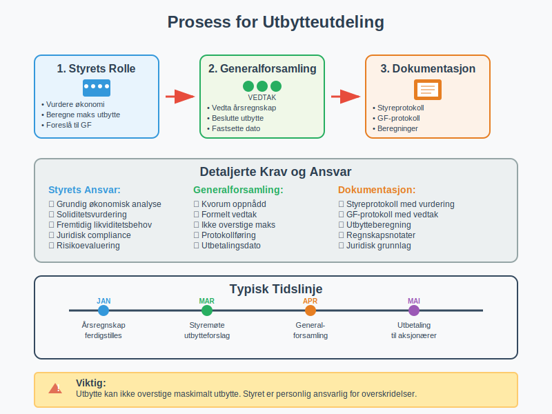
Skattemessige Konsekvenser
For Selskapet
Utbytteutdeling har følgende skattemessige konsekvenser for selskapet:
- Ingen fradragsrett for utbetalt utbytte
- Utbytte utbetales av beskattede midler
- Påvirker ikke selskapets skattepliktige inntekt
For Aksjonærene
Aksjonærene må forholde seg til:
- Utbytteskatt på mottatt utbytte
- Skjermingsrente for personlige aksjonærer
- Fritaksmetoden for selskapsaksjonærer
- Kildeskatt for utenlandske aksjonærer
Skatteoptimalisering
Strategier for skatteoptimal utbytteutdeling:
- Timing av utbytteutdeling
- Kombinasjon med lønn og andre ytelser
- Reinvestering vs. utdeling
- Holdingselskap-strukturer
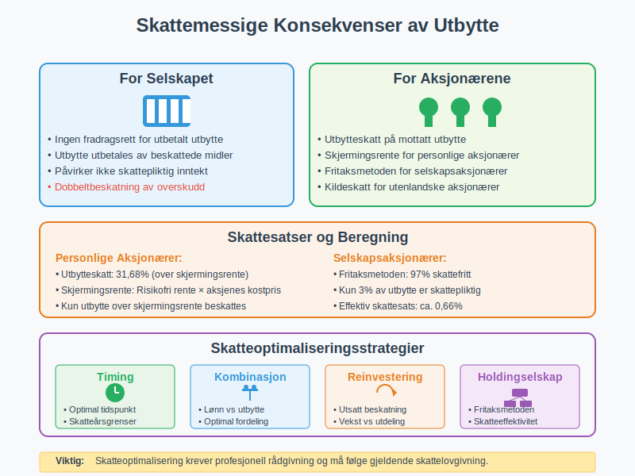
Risikofaktorer og Forsiktighetsregler
Økonomiske Risikofaktorer
Ved vurdering av maskimalt utbytte må følgende risikofaktorer vurderes:
- Konjunktursvingninger og markedsrisiko
- Likviditetsrisiko og kontantstrøm
- Kredittrisiko fra kunder og debitorer
- Operasjonell risiko i virksomheten
Forsiktighetsregler
Forsiktighetsprinsippet tilsier at selskaper bør:
- Beholde en sikkerhetsbuffer utover minimumskravene
- Vurdere fremtidige investeringsbehov
- Ta hensyn til sesongvariasjoner i virksomheten
- Planlegge for uforutsette utgifter
Juridisk Ansvar
Styremedlemmer kan bli personlig ansvarlige hvis:
- Utbytte deles ut i strid med loven
- Selskapet blir insolvent som følge av utdelingen
- Kreditorers interesser skades
- Reglene for maskimalt utbytte ikke følges
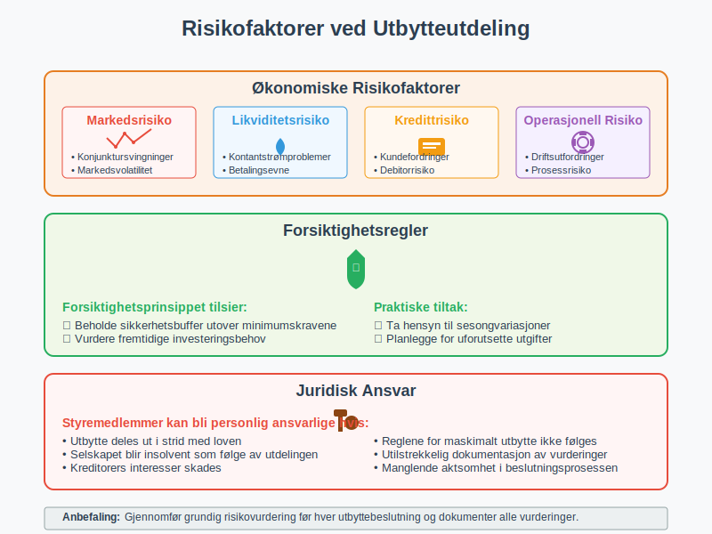
Internasjonale Forhold
EU-Regler
For selskaper med internasjonal virksomhet gjelder:
- EU-direktiver om kapitalvern
- Moder-datterselskap-direktivet for konserner
- Kildeskatteregler mellom EU-land
- Rapporteringskrav til utenlandske myndigheter
Utenlandske Aksjonærer
Spesielle hensyn for utenlandske aksjonærer:
- Kildeskatt på utbetalt utbytte
- Skatteavtaler som kan redusere skatten
- Dokumentasjonskrav for skattefritak
- Valutarisiko ved utbetaling
Transfer Pricing
I konsernforhold må vurderes:
- Armlengdeprinsippet for utbytteutdeling
- Dokumentasjon av kommersielle forhold
- Sammenligning med uavhengige parter
- Skattemyndighetenes kontroll
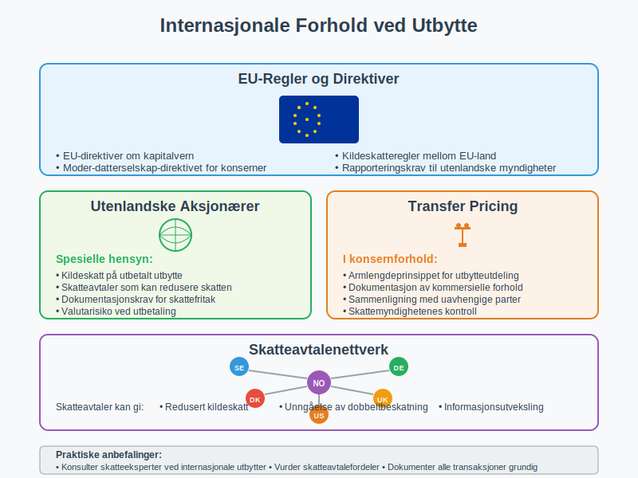
Praktiske Råd og Anbefalinger
For Små og Mellomstore Bedrifter
SMB-selskaper bør:
- Utarbeide årlig utbyttestrategi
- Konsultere regnskapsfører eller revisor
- Vurdere likviditetsbehov før utdeling
- Dokumentere alle styrevurderinger
For Vekstselskaper
Vekstselskaper må balansere:
- Reinvestering i virksomheten
- Aksjonærenes avkastningsforventninger
- Fremtidig finansieringsbehov
- Markedets verdsettelse av selskapet
For Familieselskaper
Familieselskaper har særlige hensyn:
- Generasjonsskifte og arveplanlegging
- Familiemedlemmers ulike økonomiske behov
- Selskapets langsiktige interesser
- Konfliktforebygging mellom familiemedlemmer
Digitale Verktøy
Moderne verktøy for utbytteberegning:
- Regnskapssystemer med innebygde beregninger
- Skatteberegningsprogrammer
- Juridiske databaser med oppdaterte regler
- Revisjonsverktøy for dokumentasjon
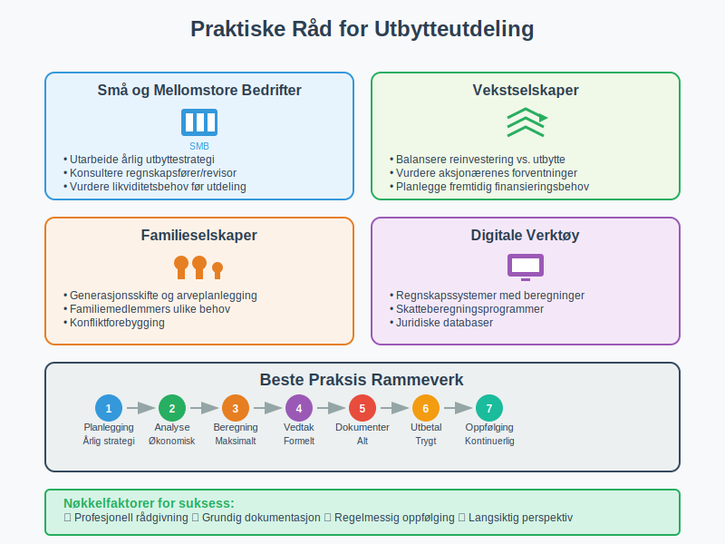
Fremtidige Utviklingstrekk
Regulatoriske Endringer
Forventede endringer i regelverket:
- Strengere soliditetskrav for enkelte bransjer
- Økt fokus på bærekraft og ESG-faktorer
- Digitalisering av rapportering og kontroll
- Harmonisering med EU-regelverk
Teknologiske Utviklinger
Teknologi påvirker utbyttehåndtering:
- Automatiserte beregninger i regnskapssystemer
- Blockchain-baserte utbyttebetalinger
- AI-støttet risikovurdering
- Sanntids-rapportering til myndigheter
Markedstrender
Utviklingstrekk i markedet:
- Økt fokus på utbyttepolitikk
- Bærekraftige investeringsstrategier
- Aktivistiske aksjonærer som krever utbytte
- Alternative finansieringsformer
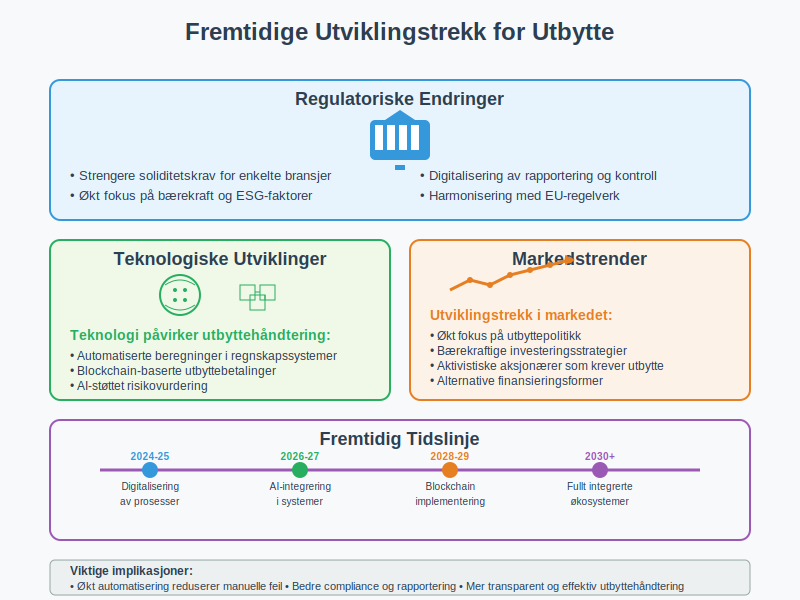
Konklusjon
Maskimalt utbytte er et komplekst regnskapsmessig og juridisk begrep som krever grundig forståelse av:
- Juridiske rammer i aksjeloven
- Regnskapsmessige prinsipper og beregningsmetoder
- Skattemessige konsekvenser for selskap og aksjonærer
- Praktiske hensyn ved utbytteutdeling
Korrekt beregning og håndtering av maskimalt utbytte er avgjørende for:
- Å overholde lovens krav
- Å beskytte kreditorers interesser
- Å optimalisere aksjonærenes avkastning
- Å sikre selskapets langsiktige stabilitet
For å sikre korrekt håndtering anbefales det å:
- Konsultere kvalifiserte rådgivere
- Dokumentere alle vurderinger og beslutninger
- Følge utviklingen i regelverk og praksis
- Implementere gode rutiner for utbyttehåndtering
Ved å følge disse prinsippene kan selskaper sikre at utbytteutdelingen skjer på en lovlig, forsvarlig og optimal måte som ivaretar alle interessenters behov.